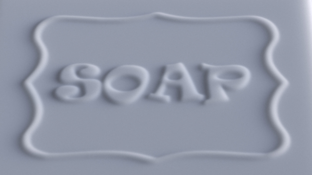

Material Matching Experiment
The soap in the images are made with diffferent materials. Your task is to match the material properties of the soap in the right image to the left. To do so, you adjust the "opacity" of the object in the right image (match) to match the perceived translucency to the object on the left (target). Notice that from trial to trial, the lighting direction can change (either side-lit or back-lit).
You can use either the left and right arrow keys or the slider to adjust the match image.PLEASE don't use both within the same trial. The left arrow key makes the object appear less opaque and the right key makes the object appear more opaque. Please examine the images carefully before you hit "Next" button when your match will be recorded. Notice, there will be four blocks of the experiment. Please press "start" button to start the trials.
| Target | Match |
|  |
Density control:
Progress: Trial
0/0Your target densities: